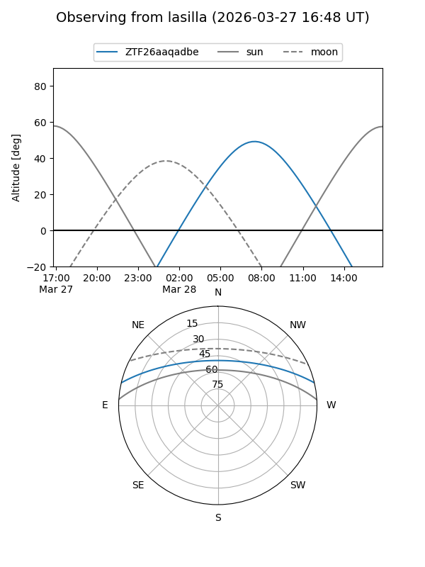
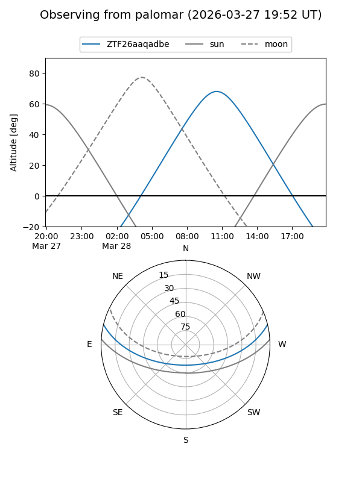

ZTF26aaqadbe
Target ZTF26aaqadbe at 2026-03-28 12:20
Aliases and brokers:
FINK: link
Lasair: link
ALeRCE: link
alt names
ZTF26aaqadbe (ztf,fink_ztf)
Coordinates:
equatorial (ra, dec) = 226.8802,+11.56795
equatorial (HMS+DMS) = 15:07:31.26,+11:34:04.61
galactic (l, b) = (13.6471,+54.49926)
Flags:
Photometry:
last ztfg=19.26
1 ztfg detections
Lightcurve
Visibility


Additional plots